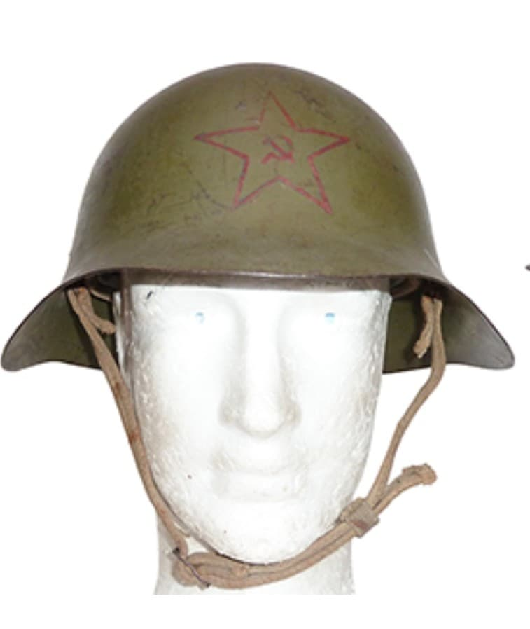
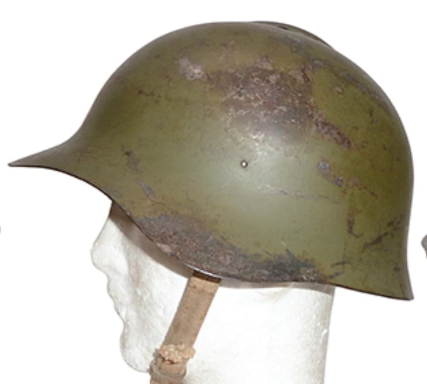
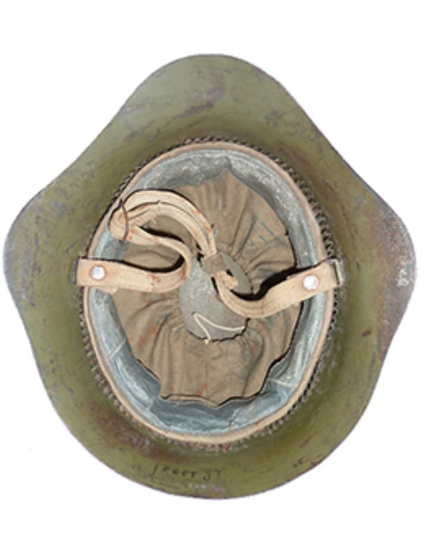

Le casque soviétique SSh‑36 est l’un des modèles les plus emblématiques de l’Armée rouge avant et au début de la Seconde Guerre mondiale. Introduit en 1936, il se distingue par sa forme anguleuse et son large pare‑nuque, conçus pour protéger les soldats contre les éclats et les chocs venant de l’arrière.
Utilisé durant la guerre d’Hiver (1939–1940), la guerre contre le Japon et les premières phases de l’invasion allemande en 1941, il est progressivement remplacé par le SSh‑39 puis le SSh‑40.

Le SSh‑36 possède une silhouette immédiatement reconnaissable : une coque anguleuse, un large pare‑nuque arrière et une visière frontale marquée. Sa conception reflète les besoins de l’Armée rouge dans les années 1930, période de modernisation rapide et d’expérimentation.
Sa peinture verte mate et son liner en toile/cuir en font un casque typique des premières années du conflit.


Le SSh‑36 est porté par les soldats soviétiques durant plusieurs conflits majeurs :
Sa production cesse rapidement après les premières défaites soviétiques de 1941, au profit du SSh‑39, plus simple et plus robuste.